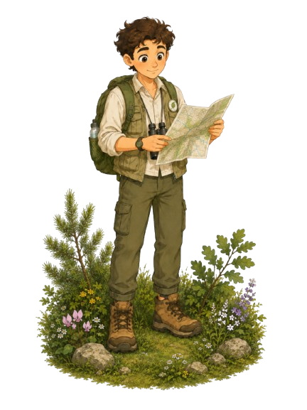
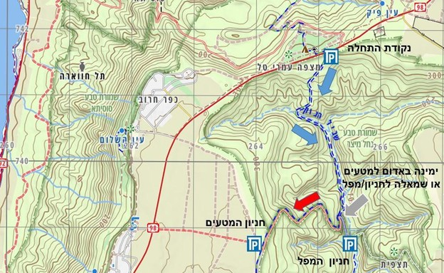

נחל מיצר ומפל מיצר

- אורך מסלול: 6 קילומטרים
- רמת קושי: בינוני
- אפשרות כניסה למים: כן, לפי עונה
- מתאים ל: משפחות ומיטיבי לכת
נחל מיצר שבדרום רמת הגולן הוא אחד מיובליו של הירמוך. המסלול, שאורכו נע בין 4 ל-6 ק"מ, מתאים לכל המשפחה ומציע חוויה ירוקה ופורחת במיוחד בחורף ובאביב. המסלול אינו מעגלי ומחייב הקפצת רכבים.

הגעה ונקודות סיום:
נקודת ההתחלה נמצאת על כביש 98, כ-2 ק"מ מדרום לקיבוץ אפיק.
נקודת הסיום נמצאת בהמשך כביש 98, בין כפר חרוב למבוא חמה,
ומשם פונים לדרך עפר המובילה לאזור החניה.
המסלול ומה רואים בדרך:
מהחניה יורדים אל אזור הנחל, עוברים בין עצי אלון תבור,
אלה אטלנטית ופריחה עונתית. בחלקים מהמסלול אפשר למצוא
מים זורמים ובריכות קטנות, במיוחד אחרי גשמים.
בהמשך מגיעים לאזור מפל מיצר, מפל יפה שזורם בעיקר בחורף.
